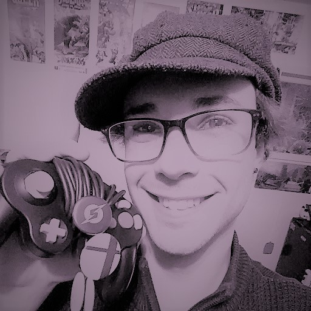

I am a competitive Super Smash Bros. Ultimate Player from Oregon. The tag I go by in tournaments is 'Churro'. I've always loved games of all kinds, and the rush that serious competition gives me.
I have been competiting in Smash since 2015, starting with Super Smash Bros. 4 on Wii U. The characters I played in Smash 4 were Mewtwo, Villager, and Bowser. So far in Ultimate my main has been Ridley, with a Pokemon Trainer secondary.
I placed in the top 32 at the tournament "Don't Park on the Grass 2018" in Seattle, WA. I'm very proud of my performance, and I'm excited to continue to practice, improve, and go as far as I can in the future!